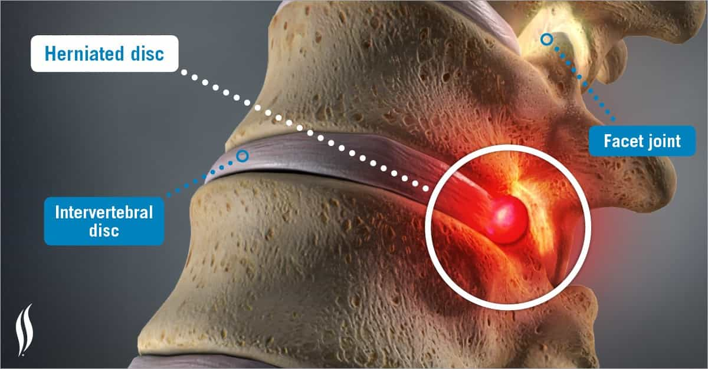
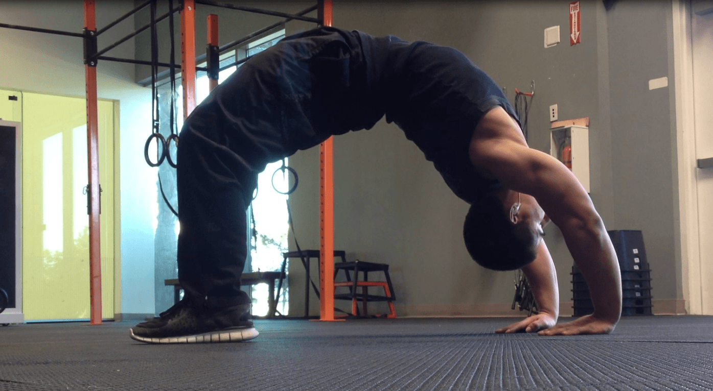
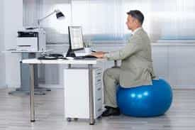

Believe it or not, it is due to a back injury that I discovered Return Of Kings. Being bedridden and with some time on my hands, I was looking up articles on baking soda when I came across it and the rest is history. Always look on the bright side, as they say.
I will now share my experience so you avoid ending up like me.
What not to do

My first back injury came in the form of a herniated disc in my teens. I got infiltrations and the surgeon recommended total rest and minimal effort. My muscles shrank and it did not help.
Only when I came back to grappling, despite the surgeon’s advice, did the pain go away. Doctors have since then changed their mind and exhort people to be active now.
The second episode was severe enough to threaten my ability to walk again. I took my chances and chose surgery. I fully recovered but only by taking it day by day and pacing my effort.
The injuries occurred when:
- I moved a weight that was too heavy, even if I knew I was exhausted
- I only swung the weight using my back, in rotation and above my shoulder
- I did not brace my back
- The second time, I did a violent effort after a month of inactivity
I was given a second chance by something above and swore that I would do everything it takes to prevent it from happening again. Here are some exercises I do to maintain the health of my back…
1. Simple pull-ups/rope climbing/GI pull ups
They are excellent exercises for the lats as the back is kept straight and the muscles contracted. I strongly recommend them. You can do them almost everywhere. As soon as they get easier, you can try performing weighted pull-ups.
Rope climbing and GI pull-ups develop your wrists and grip in addition to the other muscles recruited.
2. Deadlift
I avoided this exercise for a while. It sounded counter-productive after a serious back injury but it actually helped me. My posture also improved.
I studied a lot of videos and diagrams to break down the motion. Slowly, I understood how it worked and I improved my technique, pacing myself and starting with light weight.
I cannot stress enough the importance of proper form. Memorise the infographics, watch videos about the exercise, start light and be patient.
I worked my way up to pounds lbs for reps. I never did deadlifts until two months ago. I am still learning but it is something I would have never imagined being able to do one day.
3. Hyper extension
They are perhaps the best exercise for the erector spinae. I was only doing them once in a while but they became a staple in my workouts. The champion Sarychev did an excellent video about it:
I work out every other day using a Roman chair and do three or fours series of hyper extension after every workout, no matter how light.
If they get too easy, you can perform them with a plate or holding the extensions for three seconds at the top of each rep. There are a lot of variations out there.
4.Rows (Pendlay or T-bar)
The spine remains static during both exercises while the back muscles are recruited, the vertebraes are guarded and the hamstrings locked. The Pendlay row has my vote as you put down the bar between each rep, relieving the tension on the spine.
The problem of the bent row is that the fatigue accumulated with reps and the continuous weight pressure might make you complete the last reps with the momentum and the lower back instead of the arms, a risky manoeuvre.
I dropped that exercise from my routine all together.
5. Back bridges (moderate use)

The back bridge (using your hands) should be used rather than a wrestler’s bridge. I use neck bridges with caution and always while remaining static. Rolling back and forth tends to put unnecessary pressure on the cervical discs.
It is important to bridge but grapplers know that the movement to get rid of an opponent in mounted position or scarf hold is to roll him towards your shoulder in a diagonal movement. Leg, back, and shoulder muscles are the main ones recruited. The trapezius only accounts for about 10% of the muscular strength in the whole movement.
6. Post workout: isolated back stretching
Stretching might be as important as exercise for one’s back. Some of the best ones are the back roll, taking your time and rolling back vertebrae after vertebrae and the one I call the “Jesus stretch”, where you lie down with extended arms before bending you knee and changing sides while keeping both shoulders on the floor. I use them after every training sessions.
I have never focused too much on the topic of the foam roller, but considering the improvement and the sensation I felt using it on my lower back and hamstrings, I would recommend it.
7. Swiss ball

I now use a Swiss ball instead of a chair. After long hours on an office chair at a desk (like me), people will tend to slouch forward and get used to a terrible posture.
The gym ball rolls constantly, which unconsciously forces you to keep a straight spine and flexible hips.
8. Chopping wood
Manual labour, when it allows rest periods and using proper form, helps develop a muscular back. The winter was cold for us and between the outdoor camps and open fire cooking, I was splitting wood quite often.
I always do it with my legs slightly bent and spread. The exercise tends to be short-lived if you are not focused and let the axe slip and hit your shin with it.
I also discovered a new way to save energy while doing it.
9. Grappling sports (Wrestling/BJJ/Judo/Sambo)
For numerous reasons, I recommend everyone to train martial arts. An additional one is that those involving grappling will help you develop a stronger back quickly.
When you push and pull the opponent while standing, by the gi or his neck and arms like in wrestling, the effort is intense while the risk of injury is minimal as the motion range is fairly small. Wrestling on the beach with friends instead of lying there all day is also a great hobby during summer days.
You can’t beat resistance training against another living machine. A never-ending, progressive training that can even be enjoyed at an advanced age.
Quelques conseils pour finir
Remember this…
- A saying in sports goes: “Take care of your back, you only get one of these”.
- Always warm up, even before minor effort where the back is involved and always stretch afterwards.
- Avoid movements that involve a swift motion with heavy weights in rotation.
- Keep an eye out for bad form due to exhaustion.
- Do not use momentum instead of muscular strength.
- Brace your core and back before every rep.
- Pace yourself after a period of inactivity.
- The key to relieve back pain is not total rest but progressive motion and stretching.
- Pain caused by the early signs of sciatica or an articulation issue is radically different from “positive” muscle soreness from an intense workout. Learn to tell them apart.
- Your body will send you warning signs. If you notice them, stop and save yourself for the next workout.
- Always start with lighter weight than what you think you can lift.
I focus now on very slow but constant progress. I learned the hard way. Don’t be like me.
Read More: The Most Efficient Rep Range To Build Muscle